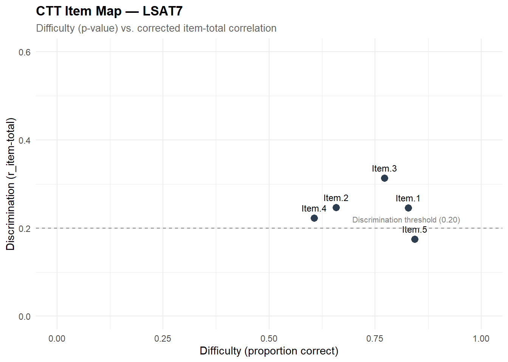
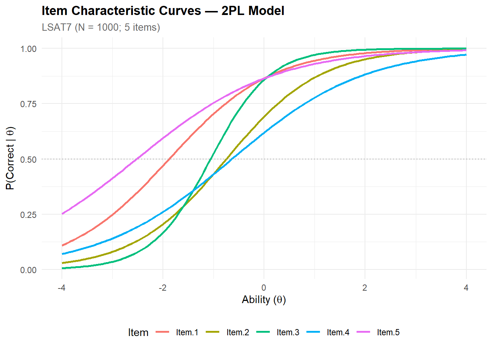
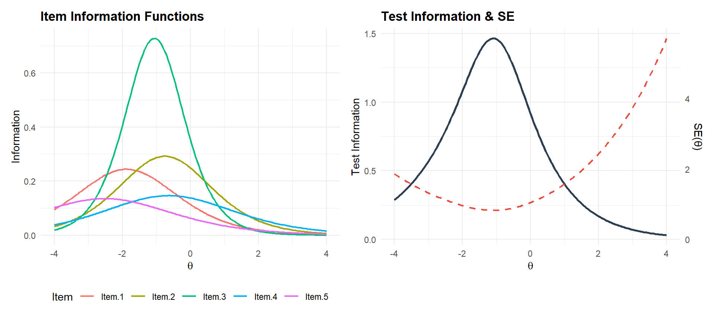
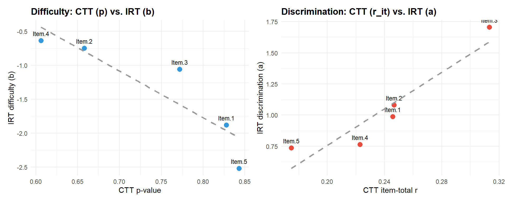
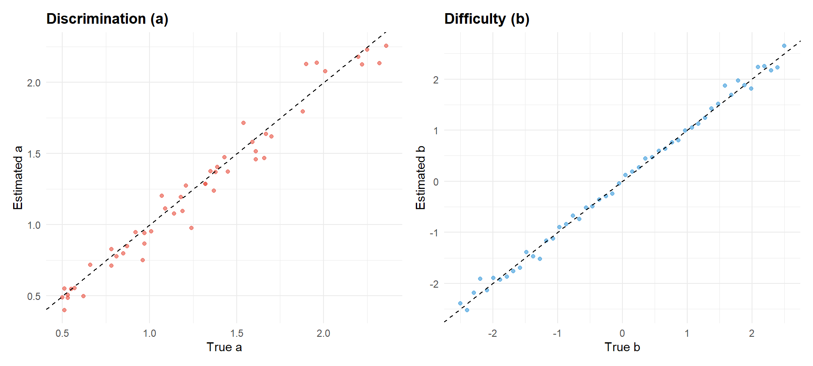
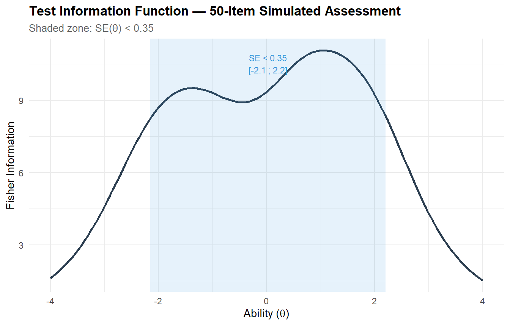
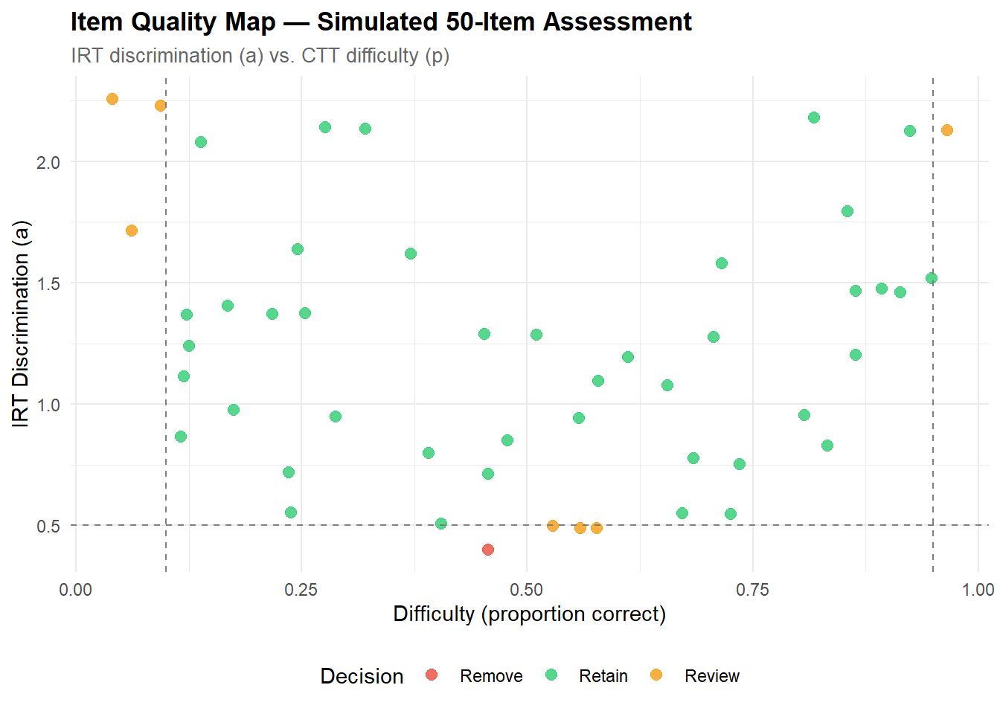
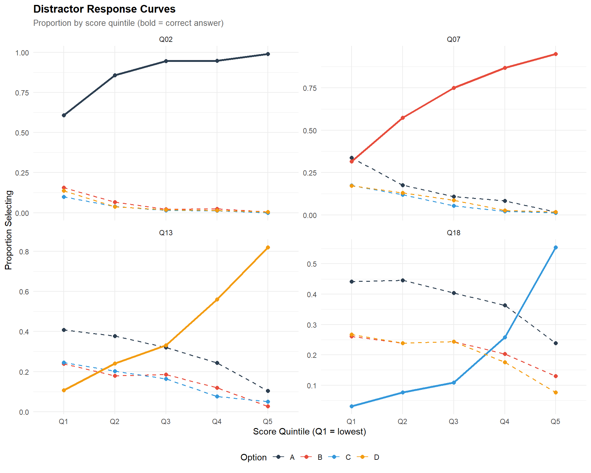

# ── Core packages ──────────────────────────────────────────────────────────────
library(mirt)
library(psych)
library(ggplot2)
library(dplyr)
library(tidyr)
library(tibble)
library(purrr)
library(knitr)
library(scales)
# ── Global plot theme ──────────────────────────────────────────────────────────
theme_set(
theme_minimal(base_size = 11) +
theme(
plot.title = element_text(face = "bold", size = 13),
plot.subtitle = element_text(colour = "grey40", size = 10),
legend.position = "bottom"
)
)
palette_irt <- c("#2C3E50", "#E74C3C", "#3498DB", "#2ECC71", "#F39C12")
set.seed(2026)IRT Item Calibration & Distractor Analysis
R
Psychometrics
IRT Item Calibration & Distractor Analysis
Fitting 1PL, 2PL, and 3PL Item Response Theory models on real (LSAT7) and simulated assessment data. Includes Classical Test Theory comparison, item and test information functions, distractor analysis on multiple-choice items, and empirically grounded item selection criteria.
0.1 Context
Item Response Theory (IRT) provides a principled probabilistic framework for modelling the relationship between latent ability (\(\theta\)) and item-level response probabilities. Unlike Classical Test Theory (CTT), which treats item statistics as sample-dependent, IRT yields item parameters (difficulty, discrimination, pseudo-guessing) that are — under model fit — invariant across populations, enabling robust item banking, computerised adaptive testing (CAT), and equating across test forms.
This project demonstrates a complete IRT calibration workflow on two datasets:
- LSAT7 — a real 5-item dichotomous law school admission dataset (Bock & Lieberman, 1970), used as a compact benchmark.
- Simulated assessment — a 50-item × 2,000-respondent dataset generated from known IRT parameters, used to demonstrate full-scale calibration, distractor analysis, and item selection in a realistic scenario.
All analyses are conducted in R using the mirt package (Chalmers, 2012) for IRT modelling and custom routines for CTT and distractor diagnostics.
0.2 Key Results
Part A — LSAT7 (5 items, N = 1,000): Cronbach’s α = 0.453, consistent with the mechanical constraint of a very short test. The 2PL model significantly outperforms the 1PL (p = .016), confirming heterogeneous discrimination across items; the 3PL adds no improvement (p = .913), ruling out pseudo-guessing. Item.3 emerges as the strongest discriminator (a = 1.71), while Item.5 is flagged on both CTT (r = 0.175, below the 0.20 conventional threshold) and IRT (a = 0.74, b = −2.52) as too easy and weakly discriminating. The test information function peaks in the negative-θ range, confirming that this item set measures low-ability respondents with reasonable precision but is poorly suited for average-to-high ability differentiation.
Part B — Simulated assessment (50 items, N = 2,000): Parameter recovery under the 2PL is excellent: correlation = 0.984 and RMSE = 0.100 for discrimination; correlation = 0.998 and RMSE = 0.104 for difficulty. The joint CTT+IRT quality filter retains 42 items (84%), flags 7 for review, and recommends removing 1 (item_29: p = 0.457, a = 0.40 — mid-difficulty but non-discriminating). Notably, three extreme-difficulty items flagged for review (item_42, item_47, item_49) have high IRT discrimination (a > 1.7), making them valuable for CAT despite being unsuitable for fixed-form tests.
Part C — Distractor analysis (20 MC items, N = 1,500): Of 60 distractors evaluated, 7 (11.7%) are non-functioning — all flagged exclusively for low selection rate (< 5%), concentrated on the easiest items (Q01–Q04). No positive-slope distractors were detected, confirming the absence of keying errors or construct-irrelevant cues. The primary intervention for flagged items is increasing item difficulty rather than revising the distractors themselves.
0.3 Setup
1 PART A — Real Data: LSAT7
1.1 Data overview
The LSAT7 dataset from the mirt package is stored as a frequency table: 32 unique response patterns across 5 dichotomous items, plus a freq column indicating how many respondents produced each pattern (total N = 1,000). We expand it into individual-level responses for CTT, and use the item columns directly for IRT.
data("LSAT7", package = "mirt")
cat("Raw format:", nrow(LSAT7), "response patterns ×", ncol(LSAT7), "columns\n")Raw format: 32 response patterns × 6 columnscat("Columns:", paste(colnames(LSAT7), collapse = ", "), "\n")Columns: Item.1, Item.2, Item.3, Item.4, Item.5, freq cat("Total respondents (sum of freq):", sum(LSAT7$freq), "\n")Total respondents (sum of freq): 1000 # ── Identify item columns (everything except 'freq') ──────────────────────────
item_cols <- setdiff(colnames(LSAT7), "freq")
n_items_lsat <- length(item_cols)
cat("Item columns:", paste(item_cols, collapse = ", "), "\n")Item columns: Item.1, Item.2, Item.3, Item.4, Item.5 # ── Expand to individual-level data for CTT ────────────────────────────────────
lsat7_expanded <- LSAT7[rep(seq_len(nrow(LSAT7)), LSAT7$freq), item_cols]
rownames(lsat7_expanded) <- NULL
cat(sprintf("\nExpanded dataset: %d respondents × %d items\n",
nrow(lsat7_expanded), ncol(lsat7_expanded)))
Expanded dataset: 1000 respondents × 5 itemskable(
head(lsat7_expanded, 10),
caption = "First 10 individual response vectors (1 = correct, 0 = incorrect)"
)| Item.1 | Item.2 | Item.3 | Item.4 | Item.5 |
|---|---|---|---|---|
| 0 | 0 | 0 | 0 | 0 |
| 0 | 0 | 0 | 0 | 0 |
| 0 | 0 | 0 | 0 | 0 |
| 0 | 0 | 0 | 0 | 0 |
| 0 | 0 | 0 | 0 | 0 |
| 0 | 0 | 0 | 0 | 0 |
| 0 | 0 | 0 | 0 | 0 |
| 0 | 0 | 0 | 0 | 0 |
| 0 | 0 | 0 | 0 | 0 |
| 0 | 0 | 0 | 0 | 0 |
# ── Load LSAT7 from mirt ──────────────────────────────────────────────────────
data("LSAT7", package = "mirt")
cat("Raw format:", nrow(LSAT7), "response patterns ×", ncol(LSAT7), "columns\n")Raw format: 32 response patterns × 6 columnscat("Columns:", paste(colnames(LSAT7), collapse = ", "), "\n")Columns: Item.1, Item.2, Item.3, Item.4, Item.5, freq cat("Total respondents (sum of freq):", sum(LSAT7$freq), "\n")Total respondents (sum of freq): 1000 # ── Identify item columns (everything except 'freq') ──────────────────────────
item_cols <- setdiff(colnames(LSAT7), "freq")
n_items_lsat <- length(item_cols)
cat("Item columns:", paste(item_cols, collapse = ", "), "\n")Item columns: Item.1, Item.2, Item.3, Item.4, Item.5 # ── Expand to individual-level data for CTT ────────────────────────────────────
lsat7_expanded <- LSAT7[rep(seq_len(nrow(LSAT7)), LSAT7$freq), item_cols]
rownames(lsat7_expanded) <- NULL
cat(sprintf("\nExpanded dataset: %d respondents × %d items\n",
nrow(lsat7_expanded), ncol(lsat7_expanded)))
Expanded dataset: 1000 respondents × 5 itemskable(
head(lsat7_expanded, 10),
caption = "First 10 individual response vectors (1 = correct, 0 = incorrect)"
)| Item.1 | Item.2 | Item.3 | Item.4 | Item.5 |
|---|---|---|---|---|
| 0 | 0 | 0 | 0 | 0 |
| 0 | 0 | 0 | 0 | 0 |
| 0 | 0 | 0 | 0 | 0 |
| 0 | 0 | 0 | 0 | 0 |
| 0 | 0 | 0 | 0 | 0 |
| 0 | 0 | 0 | 0 | 0 |
| 0 | 0 | 0 | 0 | 0 |
| 0 | 0 | 0 | 0 | 0 |
| 0 | 0 | 0 | 0 | 0 |
| 0 | 0 | 0 | 0 | 0 |
1.2 Classical Test Theory (CTT) analysis
CTT provides sample-dependent but intuitive item diagnostics. We compute difficulty (proportion correct), point-biserial discrimination, and internal consistency as baseline benchmarks before moving to IRT.
# ── Item-level CTT statistics ──────────────────────────────────────────────────
ctt_stats <- psych::alpha(lsat7_expanded, check.keys = FALSE)
ctt_item <- tibble(
item = item_cols,
difficulty = colMeans(lsat7_expanded),
discrimination = ctt_stats$item.stats$r.drop,
alpha_if_drop = ctt_stats$alpha.drop$raw_alpha
)
kable(
ctt_item,
digits = 3,
caption = sprintf("CTT item statistics — LSAT7 (N = %d)", nrow(lsat7_expanded))
)| item | difficulty | discrimination | alpha_if_drop |
|---|---|---|---|
| Item.1 | 0.828 | 0.246 | 0.396 |
| Item.2 | 0.658 | 0.247 | 0.394 |
| Item.3 | 0.772 | 0.313 | 0.345 |
| Item.4 | 0.606 | 0.223 | 0.415 |
| Item.5 | 0.843 | 0.175 | 0.438 |
cat(sprintf("\nCronbach's alpha (overall): %.3f\n", ctt_stats$total$raw_alpha))
Cronbach's alpha (overall): 0.4531.2.1 Interpretation
Overall internal consistency is low (α = 0.453), which is expected for a 5-item test — Cronbach’s alpha is mechanically constrained by test length (Spearman-Brown prophecy). Item difficulties range from 0.61 to 0.84, indicating a set of relatively easy items for this population.
Item.5 stands out with the lowest corrected item-total correlation (r = 0.175), falling below the conventional 0.20 threshold proposed by Ebel (1965) and widely adopted in psychometric practice (Nunnally & Bernstein, 1994; Kline, 2000). This means Item.5 contributes little to separating high- from low-ability respondents: it introduces more noise than signal into the total score.
In an operational assessment context, such an item would typically be flagged for revision or removal. However, a low discrimination index does not automatically disqualify an item. If Item.5 covers a content domain that other items do not, retaining it may be justified on content validity grounds — even at the cost of reduced reliability. This is the classic reliability vs. content validity trade-off: maximising alpha can narrow construct coverage, while preserving breadth may tolerate weaker items. The decision depends on the intended use of the test (Ebel, 1965; Haladyna & Rodriguez, 2013).
ggplot(ctt_item, aes(x = difficulty, y = discrimination, label = item)) +
geom_point(size = 3, colour = palette_irt[1]) +
geom_text(vjust = -1, size = 3.2) +
geom_hline(yintercept = 0.20, linetype = "dashed", colour = "grey50") +
annotate("text", x = 0.95, y = 0.22, label = "Discrimination threshold (0.20)",
size = 2.8, colour = "grey50", hjust = 1) +
labs(
title = "CTT Item Map — LSAT7",
subtitle = "Difficulty (p-value) vs. corrected item-total correlation",
x = "Difficulty (proportion correct)",
y = "Discrimination (r_item-total)"
) +
coord_cartesian(xlim = c(0, 1), ylim = c(0, 0.6))
1.3 IRT model fitting: 1PL, 2PL, 3PL
We fit the three standard unidimensional dichotomous IRT models and compare their relative fit using information criteria and likelihood-ratio tests.
# ── Use expanded individual-level data for mirt ────────────────────────────────
mod_1pl <- mirt(lsat7_expanded, model = 1, itemtype = "Rasch", verbose = FALSE)
mod_2pl <- mirt(lsat7_expanded, model = 1, itemtype = "2PL", verbose = FALSE)
mod_3pl <- mirt(lsat7_expanded, model = 1, itemtype = "3PL", verbose = FALSE)
# ── Model comparison ───────────────────────────────────────────────────────────
comparison <- anova(mod_1pl, mod_2pl, mod_3pl, verbose = FALSE)
kable(comparison, digits = 3, caption = "Model comparison: 1PL vs. 2PL vs. 3PL (LSAT7)")| AIC | SABIC | HQ | BIC | logLik | X2 | df | p | |
|---|---|---|---|---|---|---|---|---|
| mod_1pl | 5341.802 | 5352.192 | 5352.994 | 5371.248 | -2664.901 | NA | NA | NA |
| mod_2pl | 5337.610 | 5354.927 | 5356.263 | 5386.688 | -2658.805 | 12.192 | 4 | 0.016 |
| mod_3pl | 5346.110 | 5372.085 | 5374.089 | 5419.726 | -2658.055 | 1.500 | 5 | 0.913 |
1.3.1 Interpretation
The 2PL model significantly improves over the 1PL/Rasch (χ² = 12.19, df = 4, p = .016), indicating that items differ in their discriminating power — a violation of the Rasch assumption of equal discrimination. The 3PL provides no additional improvement (p = .913): there is no detectable pseudo-guessing component, which is consistent with a reasoning test where random guessing is unlikely (unlike a multiple-choice format with four or five options).
Model selection decision: the 2PL is retained as the reference model. It captures meaningful variation in discrimination across items while remaining parsimonious. The 3PL, with 5 additional parameters, offers no explanatory gain and risks overfitting on a 5-item test — a principle well established in IRT practice (Embretson & Reise, 2000).
# ── Extract IRT parameters ─────────────────────────────────────────────────────
# 2PL as reference: 3PL tends to over-fit on short tests.
params_2pl <- coef(mod_2pl, IRTpars = TRUE, simplify = TRUE)$items
params_table <- as_tibble(params_2pl, rownames = "item")
kable(params_table, digits = 3,
caption = "2PL item parameters — LSAT7 (a = discrimination, b = difficulty)")| item | a | b | g | u |
|---|---|---|---|---|
| Item.1 | 0.988 | -1.879 | 0 | 1 |
| Item.2 | 1.081 | -0.748 | 0 | 1 |
| Item.3 | 1.706 | -1.058 | 0 | 1 |
| Item.4 | 0.765 | -0.635 | 0 | 1 |
| Item.5 | 0.736 | -2.520 | 0 | 1 |
1.3.2 Interpretation
The 2PL parameters reveal important differences across items:
- Item.3 has the highest discrimination (a = 1.71), making it the strongest separator between low- and high-ability respondents. This item contributes the most information to ability estimation.
- Item.5 has the lowest discrimination (a = 0.74) and the most extreme difficulty (b = −2.52). It is very easy and does a poor job of differentiating among respondents — consistent with its weak CTT discrimination (r = 0.175).
- Difficulty values are all negative (ranging from −2.52 to −0.64), confirming that this item set is easy relative to the latent ability distribution (centred at θ = 0). The test provides most of its measurement precision in the low-ability range.
The IRT parametrisation adds value over CTT here: while CTT flagged Item.5 as marginally weak (r = 0.175), IRT locates where on the ability continuum this item operates (very low θ) and quantifies how poorly it discriminates (a = 0.74) — two pieces of information that CTT cannot disentangle from a single index.
1.4 Item Characteristic Curves (ICC)
The ICC plots the probability of a correct response as a function of latent ability (\(\theta\)). Steeper curves indicate higher discrimination.
# ── Compute trace lines ───────────────────────────────────────────────────────
theta_grid <- matrix(seq(-4, 4, by = 0.05))
tracelines <- probtrace(mod_2pl, theta_grid)
# Extract P(X=1) columns
p1_cols <- grep("\\.P\\.1$", colnames(tracelines))
p_correct <- tracelines[, p1_cols]
icc_df <- tibble(theta = as.numeric(theta_grid)) |>
bind_cols(as_tibble(p_correct, .name_repair = "minimal")) |>
setNames(c("theta", item_cols)) |>
pivot_longer(-theta, names_to = "item", values_to = "probability")
palette_lsat <- scales::hue_pal()(n_items_lsat)
ggplot(icc_df, aes(x = theta, y = probability, colour = item)) +
geom_line(linewidth = 0.9) +
scale_colour_manual(values = palette_lsat) +
geom_hline(yintercept = 0.5, linetype = "dotted", colour = "grey60") +
labs(
title = "Item Characteristic Curves — 2PL Model",
subtitle = sprintf("LSAT7 (N = %d; %d items)", nrow(lsat7_expanded), n_items_lsat),
x = expression("Ability (" * theta * ")"),
y = expression("P(Correct | " * theta * ")"),
colour = "Item"
)
1.4.1 Interpretation
The ICC plot provides a visual summary of each item’s psychometric behaviour:
- Steeper curves (Item.3) indicate higher discrimination: the transition from low to high probability of success is abrupt, meaning the item sharply distinguishes between respondents just below and just above its difficulty level.
- Flatter curves (Item.4, Item.5) indicate weaker discrimination: the probability of success increases slowly across the ability range, meaning these items provide diffuse, imprecise information.
- Horizontal position reflects difficulty: curves shifted to the left (Item.5, b = −2.52) indicate easy items; curves shifted to the right (Item.4, b = −0.64) indicate relatively harder items within this set.
The dotted line at P = 0.50 intersects each curve at its difficulty parameter (b): this is the ability level at which a respondent has a 50% chance of answering correctly.
1.5 Item & Test Information Functions
Information quantifies the precision of measurement at each point along the ability continuum.
# ── Item information ───────────────────────────────────────────────────────────
item_info <- tibble(theta = as.numeric(theta_grid))
for (i in seq_len(n_items_lsat)) {
info_i <- iteminfo(extract.item(mod_2pl, i), Theta = theta_grid)
item_info[[item_cols[i]]] <- as.numeric(info_i)
}
iif_long <- item_info |>
pivot_longer(-theta, names_to = "item", values_to = "information")
# ── Test information ───────────────────────────────────────────────────────────
test_info_vals <- testinfo(mod_2pl, Theta = theta_grid)
tif_df <- tibble(
theta = as.numeric(theta_grid),
information = as.numeric(test_info_vals),
se = 1 / sqrt(as.numeric(test_info_vals))
)
# ── Plots ──────────────────────────────────────────────────────────────────────
p1 <- ggplot(iif_long, aes(x = theta, y = information, colour = item)) +
geom_line(linewidth = 0.8) +
scale_colour_manual(values = palette_lsat) +
labs(title = "Item Information Functions",
x = expression(theta), y = "Information", colour = "Item")
p2 <- ggplot(tif_df, aes(x = theta)) +
geom_line(aes(y = information), colour = palette_irt[1], linewidth = 1) +
geom_line(aes(y = se * max(information) / max(se)),
colour = palette_irt[2], linetype = "dashed", linewidth = 0.8) +
scale_y_continuous(
name = "Test Information",
sec.axis = sec_axis(~ . * max(tif_df$se) / max(tif_df$information), name = "SE(θ)")
) +
labs(title = "Test Information & SE", x = expression(theta))
if (requireNamespace("patchwork", quietly = TRUE)) {
library(patchwork)
p1 + p2
} else {
print(p1)
print(p2)
}
1.5.1 Interpretation
Item Information Functions (left panel): each item contributes information (measurement precision) in a specific region of the ability continuum. Item.3, with its high discrimination, produces a sharp, tall peak — it measures very precisely around θ ≈ −1, but contributes little elsewhere. Lower-discrimination items (Item.4, Item.5) produce flatter, broader curves: less precise overall, but spread across a wider ability range.
Test Information Function (right panel): the total test information peaks in the negative-θ region (approximately −2 to −1), reflecting the fact that all five items are relatively easy. The corresponding SE(θ) is lowest in this zone and increases sharply at the extremes.
Practical implication: this test measures low-ability respondents with reasonable precision but is poorly suited for distinguishing among average-to-high-ability respondents. In an operational context, this would warrant adding harder items to shift information toward the centre of the ability distribution — or implementing a CAT strategy that selects items adaptively based on interim ability estimates.
1.6 CTT vs. IRT comparison
CTT difficulty and IRT difficulty typically correlate, but CTT discrimination can saturate where IRT discrimination does not.
comparison_df <- ctt_item |>
mutate(
irt_a = params_2pl[, "a"],
irt_b = params_2pl[, "b"]
)
p_diff <- ggplot(comparison_df, aes(x = difficulty, y = irt_b)) +
geom_point(size = 3, colour = palette_irt[3]) +
geom_text(aes(label = item), vjust = -1, size = 3) +
geom_smooth(method = "lm", se = FALSE, linetype = "dashed", colour = "grey60") +
labs(title = "Difficulty: CTT (p) vs. IRT (b)",
x = "CTT p-value", y = "IRT difficulty (b)")
p_disc <- ggplot(comparison_df, aes(x = discrimination, y = irt_a)) +
geom_point(size = 3, colour = palette_irt[2]) +
geom_text(aes(label = item), vjust = -1, size = 3) +
geom_smooth(method = "lm", se = FALSE, linetype = "dashed", colour = "grey60") +
labs(title = "Discrimination: CTT (r_it) vs. IRT (a)",
x = "CTT item-total r", y = "IRT discrimination (a)")
if (requireNamespace("patchwork", quietly = TRUE)) {
p_diff + p_disc
} else {
print(p_diff)
print(p_disc)
}
1.6.1 Interpretation
Difficulty (left panel): CTT difficulty (proportion correct) and IRT difficulty (b) are strongly negatively related, as expected: higher p-values (easy items) correspond to more negative b-values. The near-linear relationship confirms convergence between the two frameworks on this parameter — but note that IRT maps difficulty onto the latent trait metric, which stretches the scale at the extremes where p approaches 0 or 1.
Discrimination (right panel): CTT discrimination (corrected item-total r) and IRT discrimination (a) correlate positively. Item.3 leads on both indices (highest r, highest a), while Item.5 is weakest on both. With only 5 data points the linear fit is illustrative rather than definitive, but the pattern confirms that both frameworks identify the same items as strong or weak discriminators.
The key added value of IRT over CTT: it separates difficulty from discrimination into two independent parameters estimated on the same latent scale. CTT conflates them — a very easy item (p = 0.84) mechanically has restricted variance, which depresses r regardless of the item’s intrinsic discriminating power. IRT avoids this confound, making it the preferred framework for item banking, CAT, and equating.
2 PART B — Simulated Extended Assessment
2.1 Simulation design
To demonstrate full-scale IRT calibration with realistic complexity, we generate a 50-item × 2,000-respondent dataset from known 2PL parameters. This allows verification of parameter recovery and illustrates workflows applicable to operational item banking.
n_items <- 50
n_respondents <- 2000
true_b <- seq(-2.5, 2.5, length.out = n_items)
true_a <- round(runif(n_items, min = 0.5, max = 2.5), 2)
true_params <- tibble(
item = paste0("item_", sprintf("%02d", 1:n_items)),
true_a = true_a,
true_b = true_b
)
theta_true <- rnorm(n_respondents, mean = 0, sd = 1)
response_matrix <- matrix(NA, nrow = n_respondents, ncol = n_items)
colnames(response_matrix) <- true_params$item
for (j in 1:n_items) {
prob_j <- 1 / (1 + exp(-true_a[j] * (theta_true - true_b[j])))
response_matrix[, j] <- rbinom(n_respondents, size = 1, prob = prob_j)
}
sim_data <- as.data.frame(response_matrix)
cat(sprintf("Simulated dataset: %d respondents × %d items\n",
nrow(sim_data), ncol(sim_data)))Simulated dataset: 2000 respondents × 50 itemscat(sprintf("Mean proportion correct: %.3f (range: %.3f – %.3f)\n",
mean(colMeans(sim_data)), min(colMeans(sim_data)), max(colMeans(sim_data))))Mean proportion correct: 0.495 (range: 0.040 – 0.966)2.1.1 Interpretation
The simulated item bank has a mean proportion correct of 0.495 (range: 0.040–0.966), confirming that the difficulty spread covers the full spectrum from very hard to very easy items. This is intentional: an operational item bank should include items across the entire difficulty range to support both fixed-form test assembly (targeting a specific ability range) and adaptive testing (where items must be available at every ability level).
Key design choices:
- Difficulty range [−2.5, 2.5]: spans nearly the full practical ability range. The extreme items (p = 0.04 and p = 0.97) will likely be flagged in the quality review — this is expected and demonstrates that the selection pipeline correctly identifies floor/ceiling items.
- Discrimination range [0.5, 2.5]: includes both weak and strong items, creating realistic heterogeneity that tests the calibration algorithm.
- N = 2,000: sufficient for stable 2PL estimation; marginal maximum likelihood (the default in
mirt) typically requires N ≥ 500 for accurate recovery of discrimination parameters (de Ayala, 2009).
2.2 IRT calibration on simulated data
mod_sim_2pl <- mirt(sim_data, model = 1, itemtype = "2PL", verbose = FALSE)
est_params <- coef(mod_sim_2pl, IRTpars = TRUE, simplify = TRUE)$items
recovery_df <- true_params |>
mutate(
est_a = est_params[, "a"],
est_b = est_params[, "b"]
)
kable(head(recovery_df, 10), digits = 3,
caption = "Parameter recovery: first 10 items (true vs. estimated)")| item | true_a | true_b | est_a | est_b |
|---|---|---|---|---|
| item_01 | 1.90 | -2.500 | 2.129 | -2.389 |
| item_02 | 1.61 | -2.398 | 1.517 | -2.521 |
| item_03 | 0.78 | -2.296 | 0.829 | -2.186 |
| item_04 | 1.07 | -2.194 | 1.204 | -1.914 |
| item_05 | 1.61 | -2.092 | 1.459 | -2.136 |
| item_06 | 0.55 | -1.990 | 0.548 | -1.895 |
| item_07 | 1.43 | -1.888 | 1.474 | -1.924 |
| item_08 | 2.22 | -1.786 | 2.125 | -1.870 |
| item_09 | 1.01 | -1.684 | 0.954 | -1.763 |
| item_10 | 1.66 | -1.582 | 1.467 | -1.697 |
2.3 Parameter recovery evaluation
recovery_stats <- tribble(
~parameter, ~correlation, ~bias, ~rmse,
"Discrimination (a)",
cor(recovery_df$true_a, recovery_df$est_a),
mean(recovery_df$est_a - recovery_df$true_a),
sqrt(mean((recovery_df$est_a - recovery_df$true_a)^2)),
"Difficulty (b)",
cor(recovery_df$true_b, recovery_df$est_b),
mean(recovery_df$est_b - recovery_df$true_b),
sqrt(mean((recovery_df$est_b - recovery_df$true_b)^2))
)
kable(recovery_stats, digits = 4, caption = "Parameter recovery summary")| parameter | correlation | bias | rmse |
|---|---|---|---|
| Discrimination (a) | 0.9843 | -0.0304 | 0.0996 |
| Difficulty (b) | 0.9976 | 0.0075 | 0.1039 |
Estimated vs. true values. Points near the identity line indicate accurate recovery.
p_rec_a <- ggplot(recovery_df, aes(x = true_a, y = est_a)) +
geom_point(alpha = 0.6, colour = palette_irt[2]) +
geom_abline(slope = 1, intercept = 0, linetype = "dashed") +
labs(title = "Discrimination (a)", x = "True a", y = "Estimated a")
p_rec_b <- ggplot(recovery_df, aes(x = true_b, y = est_b)) +
geom_point(alpha = 0.6, colour = palette_irt[3]) +
geom_abline(slope = 1, intercept = 0, linetype = "dashed") +
labs(title = "Difficulty (b)", x = "True b", y = "Estimated b")
if (requireNamespace("patchwork", quietly = TRUE)) {
p_rec_a + p_rec_b
} else {
print(p_rec_a)
print(p_rec_b)
}
2.3.1 Interpretation
Parameter recovery is excellent on both indices:
- Discrimination (a): correlation = 0.984, bias = −0.030, RMSE = 0.100. The near-unity correlation confirms that item rank-ordering by discrimination is faithfully recovered. The slight negative bias (−0.030) indicates minimal systematic under-estimation of discrimination, well within acceptable margins.
- Difficulty (b): correlation = 0.998, bias = 0.008, RMSE = 0.104. Recovery is near-perfect — difficulty is generally easier to estimate than discrimination because it is anchored by more data (the full score distribution), whereas discrimination depends on the slope of the response function, which requires more precision.
The recovery plots should show tight clustering around the identity line. Any outliers far from the diagonal would signal items for which estimation was unstable — typically extreme items (very easy, very hard, or very low discrimination) where response variability is limited.
These results validate the analysis pipeline: the mirt estimator, with N = 2,000 and 50 items, recovers the generating parameters with high fidelity. This gives confidence in applying the same workflow to real operational data where true parameters are unknown.
2.4 Test information and measurement precision
theta_range <- matrix(seq(-4, 4, by = 0.05))
sim_tif <- testinfo(mod_sim_2pl, Theta = theta_range)
tif_sim_df <- tibble(
theta = as.numeric(theta_range),
info = as.numeric(sim_tif),
se = 1 / sqrt(as.numeric(sim_tif))
)
# Adaptive threshold: use 0.30 if achievable, otherwise 0.35
se_threshold <- if (any(tif_sim_df$se < 0.30)) 0.30 else 0.35
reliable_zone <- tif_sim_df |> filter(se < se_threshold)
p_tif <- ggplot(tif_sim_df, aes(x = theta, y = info)) +
geom_line(linewidth = 1, colour = palette_irt[1]) +
labs(
title = "Test Information Function — 50-Item Simulated Assessment",
x = expression("Ability (" * theta * ")"),
y = "Fisher Information"
)
# Add shaded zone only if reliable region exists
if (nrow(reliable_zone) > 0) {
zone_min <- min(reliable_zone$theta)
zone_max <- max(reliable_zone$theta)
p_tif <- p_tif +
annotate("rect", xmin = zone_min, xmax = zone_max,
ymin = -Inf, ymax = Inf, fill = palette_irt[3], alpha = 0.12) +
annotate("text", x = (zone_min + zone_max) / 2,
y = max(tif_sim_df$info) * 0.95,
label = sprintf("SE < %.2f\n[%.1f ; %.1f]",
se_threshold, zone_min, zone_max),
size = 3, colour = palette_irt[3]) +
labs(subtitle = sprintf("Shaded zone: SE(θ) < %.2f", se_threshold))
} else {
min_se <- min(tif_sim_df$se)
p_tif <- p_tif +
labs(subtitle = sprintf("Minimum SE(θ) = %.3f — no region below %.2f",
min_se, se_threshold))
}
p_tif
2.4.1 Interpretation
The Test Information Function shows how measurement precision is distributed across the ability continuum for the full 50-item bank. With items spread from b = −2.5 to b = 2.5, information is distributed broadly rather than concentrated in a single region — a desirable property for an item bank intended to serve diverse populations.
If a reliable measurement zone is identified (shaded area), it indicates the ability range where the standard error of estimation falls below the threshold — corresponding to measurement precision sufficient for individual-level decisions. Regions outside this zone require caution: ability estimates carry wider confidence intervals and should not be used for high-stakes classification without additional items.
If no region meets the SE < 0.30 criterion, it signals that the 50-item pool, while informative overall, does not achieve the precision required for fine- grained individual measurement at any single ability level. This is common when items have heterogeneous discriminations: high-a items contribute sharp peaks of information at specific θ values, but low-a items spread thin information broadly without reaching a cumulative threshold. In practice, this motivates item selection — assembling a targeted subset of high-discrimination items — or CAT, which concentrates administered items around the individual’s estimated ability.
2.5 Item selection criteria
Operational item banking requires systematic item selection. We apply standard psychometric quality thresholds to flag items for retention, review, or removal.
sim_ctt <- psych::alpha(sim_data, check.keys = FALSE)
item_quality <- tibble(
item = true_params$item,
ctt_p = colMeans(sim_data),
ctt_rit = sim_ctt$item.stats$r.drop,
irt_a = est_params[, "a"],
irt_b = est_params[, "b"]
) |>
mutate(
flag_difficulty = ctt_p < 0.10 | ctt_p > 0.95,
flag_discrim_ctt = ctt_rit < 0.20,
flag_discrim_irt = irt_a < 0.50,
n_flags = flag_difficulty + flag_discrim_ctt + flag_discrim_irt,
decision = case_when(
n_flags == 0 ~ "Retain",
n_flags == 1 ~ "Review",
TRUE ~ "Remove"
)
)
kable(item_quality |> count(decision), caption = "Item selection summary")| decision | n |
|---|---|
| Remove | 1 |
| Retain | 42 |
| Review | 7 |
flagged <- item_quality |> filter(decision != "Retain")
if (nrow(flagged) > 0) {
kable(flagged |> select(item, ctt_p, ctt_rit, irt_a, irt_b, decision),
digits = 3, caption = "Flagged items: review or removal recommended")
}| item | ctt_p | ctt_rit | irt_a | irt_b | decision |
|---|---|---|---|---|---|
| item_01 | 0.966 | 0.275 | 2.129 | -2.389 | Review |
| item_18 | 0.577 | 0.217 | 0.488 | -0.672 | Review |
| item_20 | 0.559 | 0.217 | 0.488 | -0.513 | Review |
| item_24 | 0.528 | 0.224 | 0.499 | -0.242 | Review |
| item_29 | 0.457 | 0.185 | 0.401 | 0.447 | Remove |
| item_42 | 0.094 | 0.419 | 2.230 | 1.691 | Review |
| item_47 | 0.040 | 0.309 | 2.258 | 2.254 | Review |
| item_49 | 0.062 | 0.315 | 1.714 | 2.231 | Review |
ggplot(item_quality, aes(x = ctt_p, y = irt_a, colour = decision)) +
geom_point(size = 2.5, alpha = 0.8) +
scale_colour_manual(values = c("Retain" = palette_irt[4],
"Review" = palette_irt[5],
"Remove" = palette_irt[2])) +
geom_hline(yintercept = 0.50, linetype = "dashed", colour = "grey50", linewidth = 0.4) +
geom_vline(xintercept = c(0.10, 0.95), linetype = "dashed", colour = "grey50", linewidth = 0.4) +
labs(
title = "Item Quality Map — Simulated 50-Item Assessment",
subtitle = "IRT discrimination (a) vs. CTT difficulty (p)",
x = "Difficulty (proportion correct)",
y = "IRT Discrimination (a)",
colour = "Decision"
)
2.5.1 Interpretation
The joint quality filter retains 42 out of 50 items (84%), flags 7 for review, and recommends removing 1. This is a realistic outcome for a simulated item bank with heterogeneous parameters.
Removed item — item_29 (p = 0.457, r = 0.185, a = 0.40): this item sits in the mid-difficulty range but has very low discrimination on both CTT and IRT criteria. It fails to distinguish between respondents despite being neither too easy nor too hard — suggesting that the item content may be ambiguous or multidimensional. In an operational context, this item would be sent to content review before a final removal decision.
Reviewed items fall into three categories:
- Floor/ceiling items (item_01 p = 0.97; item_42 p = 0.09; item_47 p = 0.04; item_49 p = 0.06): flagged for extreme difficulty. Notably, item_42, item_47, and item_49 have high IRT discrimination (a > 1.7) — they are excellent separators at their specific ability level but nearly everyone fails or passes them in the overall sample. These items are valuable for CAT (where they would be administered only to respondents near their difficulty level) but inappropriate for a fixed-form test targeting the average population.
- Low-discrimination items (item_18, item_20, item_24): moderate difficulty but weak discrimination (a ≈ 0.49). These provide little information at any ability level and are candidates for revision or replacement.
The item quality map visually confirms this pattern: retained items (green) cluster in the acceptable region, while flagged items sit outside the threshold lines. The diagonal spread illustrates the independence of difficulty and discrimination — a core insight of IRT that CTT cannot capture as cleanly.
3 PART C — Distractor Analysis (Simulated Multiple-Choice Data)
Distractor analysis requires actual response options (not just correct/incorrect). We simulate a 20-item, 4-option multiple-choice dataset with realistic distractor attractiveness patterns.
3.1 Simulation of multiple-choice responses
n_mc_items <- 20
n_mc_resp <- 1500
theta_mc <- rnorm(n_mc_resp, 0, 1)
correct_key <- sample(LETTERS[1:4], n_mc_items, replace = TRUE)
mc_difficulty <- seq(-2, 2, length.out = n_mc_items)
mc_responses <- matrix(NA_character_, nrow = n_mc_resp, ncol = n_mc_items)
colnames(mc_responses) <- paste0("Q", sprintf("%02d", 1:n_mc_items))
for (j in 1:n_mc_items) {
p_correct <- 1 / (1 + exp(-1.2 * (theta_mc - mc_difficulty[j])))
for (i in 1:n_mc_resp) {
if (runif(1) < p_correct[i]) {
mc_responses[i, j] <- correct_key[j]
} else {
wrong_opts <- setdiff(LETTERS[1:4], correct_key[j])
mc_responses[i, j] <- sample(wrong_opts, 1, prob = c(2, 1, 1) / 4)
}
}
}
mc_df <- as.data.frame(mc_responses, stringsAsFactors = FALSE)
cat(sprintf("MC dataset: %d respondents × %d items × 4 options\n",
n_mc_resp, n_mc_items))MC dataset: 1500 respondents × 20 items × 4 options3.2 Distractor response curves
Distractor response curves (DRC) plot the proportion selecting each option as a function of total score, revealing non-functioning distractors.
# ── Score respondents ──────────────────────────────────────────────────────────
mc_scored <- matrix(0L, nrow = n_mc_resp, ncol = n_mc_items)
for (j in 1:n_mc_items) {
mc_scored[, j] <- as.integer(mc_responses[, j] == correct_key[j])
}
total_score <- rowSums(mc_scored)
score_bin <- cut(total_score,
breaks = quantile(total_score, probs = seq(0, 1, 0.2)),
include.lowest = TRUE, labels = paste0("Q", 1:5))
# ── Proportion by option × score bin ──────────────────────────────────────────
drc_list <- list()
for (j in 1:n_mc_items) {
for (opt in LETTERS[1:4]) {
props <- tapply(mc_responses[, j] == opt, score_bin, mean, na.rm = TRUE)
drc_list[[length(drc_list) + 1]] <- tibble(
item = colnames(mc_responses)[j],
option = opt,
is_key = opt == correct_key[j],
score_bin = names(props),
proportion = as.numeric(props)
)
}
}
drc_df <- bind_rows(drc_list) |>
mutate(score_bin = factor(score_bin, levels = paste0("Q", 1:5)))
# ── Plot 4 representative items ────────────────────────────────────────────────
plot_items <- paste0("Q", sprintf("%02d", c(2, 7, 13, 18)))
ggplot(
drc_df |> filter(item %in% plot_items),
aes(x = score_bin, y = proportion, colour = option, group = option,
linewidth = is_key, linetype = is_key)
) +
geom_line() +
geom_point(size = 2) +
scale_linewidth_manual(values = c("TRUE" = 1.2, "FALSE" = 0.6), guide = "none") +
scale_linetype_manual(values = c("TRUE" = "solid", "FALSE" = "dashed"), guide = "none") +
scale_colour_manual(values = c("A" = palette_irt[1], "B" = palette_irt[2],
"C" = palette_irt[3], "D" = palette_irt[5])) +
facet_wrap(~ item, scales = "free_y", ncol = 2) +
labs(
title = "Distractor Response Curves",
subtitle = "Proportion by score quintile (bold = correct answer)",
x = "Score Quintile (Q1 = lowest)",
y = "Proportion Selecting",
colour = "Option"
)
3.2.1 Interpretation
The distractor response curves for four representative items (Q02, Q07, Q13, Q18) illustrate the expected patterns across the difficulty spectrum:
- Easy items (Q02): the correct answer (bold line) is selected by a very high proportion of respondents across all quintiles. Distractors are barely selected, even among low-scoring respondents — consistent with the item being too easy for the population. The distractors have little room to “work” when the correct answer dominates.
- Medium items (Q07, Q13): the classic pattern emerges — the correct answer increases from Q1 to Q5, while distractors decrease. The first distractor (weighted double in the simulation) attracts more low-ability respondents than the other two, confirming its role as an “attractive distractor” that captures a common misconception.
- Hard items (Q18): the correct answer starts low and rises steeply. All three distractors are well-selected among low-scoring respondents, with a clear decreasing trend — indicating that each option functions as an effective alternative.
The visual inspection confirms that item difficulty and distractor functioning are tightly coupled: easy items tend to have non-functioning distractors (insufficient selection rate), while harder items provide better diagnostic information through their response options.
3.3 Distractor effectiveness summary
distractor_flags <- drc_df |>
filter(!is_key) |>
group_by(item, option) |>
summarise(
overall_prop = mean(proportion),
slope_q1_q5 = proportion[score_bin == "Q5"] - proportion[score_bin == "Q1"],
.groups = "drop"
) |>
mutate(
flag_low_choice = overall_prop < 0.05,
flag_pos_slope = slope_q1_q5 > 0.02,
non_functioning = flag_low_choice | flag_pos_slope
)
cat(sprintf("Total distractors evaluated: %d\n", nrow(distractor_flags)))Total distractors evaluated: 60cat(sprintf("Non-functioning distractors: %d (%.1f%%)\n",
sum(distractor_flags$non_functioning),
100 * mean(distractor_flags$non_functioning)))Non-functioning distractors: 7 (11.7%)flagged_dist <- distractor_flags |> filter(non_functioning)
if (nrow(flagged_dist) > 0) {
kable(
flagged_dist |> select(item, option, overall_prop, slope_q1_q5,
flag_low_choice, flag_pos_slope),
digits = 3,
caption = "Non-functioning distractors requiring revision"
)
}| item | option | overall_prop | slope_q1_q5 | flag_low_choice | flag_pos_slope |
|---|---|---|---|---|---|
| Q01 | B | 0.029 | -0.104 | TRUE | FALSE |
| Q01 | C | 0.020 | -0.071 | TRUE | FALSE |
| Q02 | C | 0.033 | -0.098 | TRUE | FALSE |
| Q02 | D | 0.043 | -0.134 | TRUE | FALSE |
| Q03 | B | 0.038 | -0.107 | TRUE | FALSE |
| Q03 | C | 0.048 | -0.152 | TRUE | FALSE |
| Q04 | D | 0.048 | -0.126 | TRUE | FALSE |
3.3.1 Interpretation
Out of 60 distractors evaluated (20 items × 3 distractors each), 7 are flagged as non-functioning (11.7%). All 7 are flagged exclusively for low selection rate (< 5%) — none exhibit a positive slope (increasing selection with ability), which would be the more severe diagnostic signal.
The flagged distractors concentrate on the easiest items (Q01–Q04), which is structurally expected: when the correct answer is selected by 85–95% of respondents, the remaining 5–15% is split among three distractors, making it arithmetically difficult for any single option to reach the 5% threshold. This is not a distractor quality problem per se — it is a difficulty problem. The options may be perfectly reasonable, but the item is simply too easy for the population.
Practical recommendations:
- For Q01–Q04, the priority intervention is to increase item difficulty (e.g., by making the correct answer less obvious) rather than revising the distractors themselves. Alternatively, these items could be reserved for a low-ability routing stage in a CAT context.
- The absence of positive-slope distractors across all 20 items is a positive finding: it confirms that no distractor attracts high-ability respondents more than low-ability ones — there are no keying errors, ambiguities, or construct-irrelevant cues in the simulated item set.
- A real-world assessment would complement this statistical review with content expert judgment: does each distractor correspond to a plausible misconception? Is the wording unambiguous? Statistical flags identify where to look; content review determines what to fix (Haladyna & Rodriguez, 2013).
4 Technical Summary
cat("─── Reproducibility Information ───\n")─── Reproducibility Information ───cat(sprintf("Date: %s\n", Sys.Date()))Date: 2026-04-07cat(sprintf("R version: %s\n", R.version.string))R version: R version 4.4.1 (2024-06-14 ucrt)cat(sprintf("mirt version: %s\n", packageVersion("mirt")))mirt version: 1.46.1cat(sprintf("psych version: %s\n", packageVersion("psych")))psych version: 2.4.6.26cat(sprintf("Platform: %s\n", sessionInfo()$platform))Platform: x86_64-w64-mingw32/x644.1 References
- Baker, F. B. (2001). The Basics of Item Response Theory (2nd ed.). ERIC Clearinghouse on Assessment and Evaluation.
- Bock, R. D., & Lieberman, M. (1970). Fitting a response model for n dichotomously scored items. Psychometrika, 35(2), 179–197.
- Chalmers, R. P. (2012). mirt: A multidimensional item response theory package for the R environment. Journal of Statistical Software, 48(6), 1–29.
- de Ayala, R. J. (2009). The Theory and Practice of Item Response Theory. Guilford Press.
- Embretson, S. E., & Reise, S. P. (2000). Item Response Theory for Psychologists. Lawrence Erlbaum Associates.
- Ebel, R. L. (1965). Measuring Educational Achievement. Prentice-Hall.
- Haladyna, T. M., & Rodriguez, M. C. (2013). Developing and Validating Test Items. Routledge.
- Kline, P. (2000). Handbook of Psychological Testing (2nd ed.). Routledge.
- Nunnally, J. C., & Bernstein, I. H. (1994). Psychometric Theory (3rd ed.). McGraw-Hill.